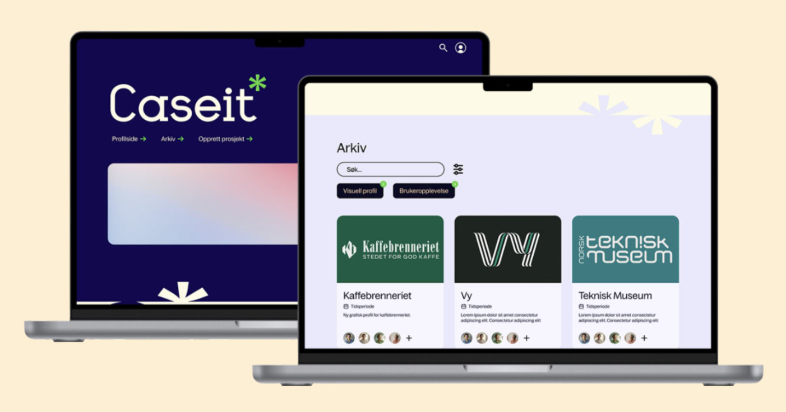
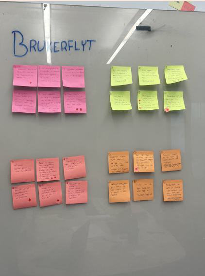
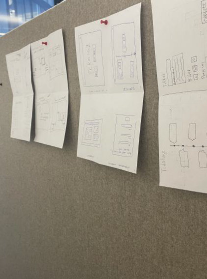
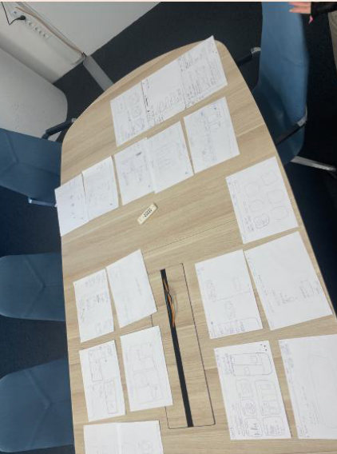
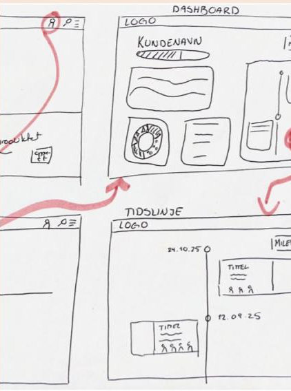
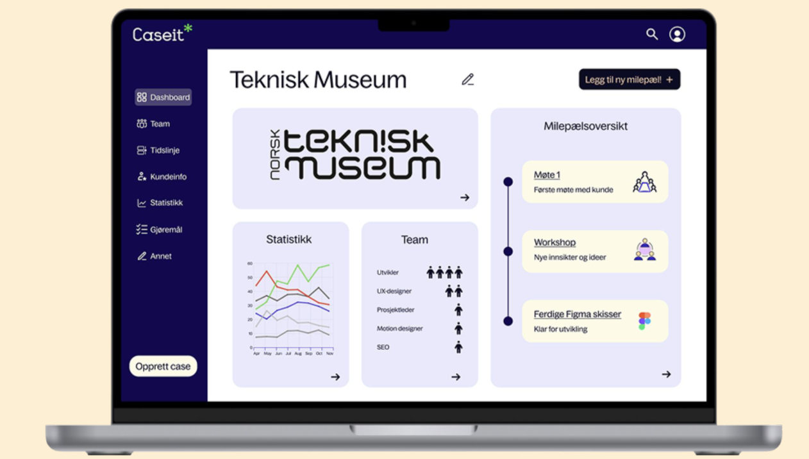
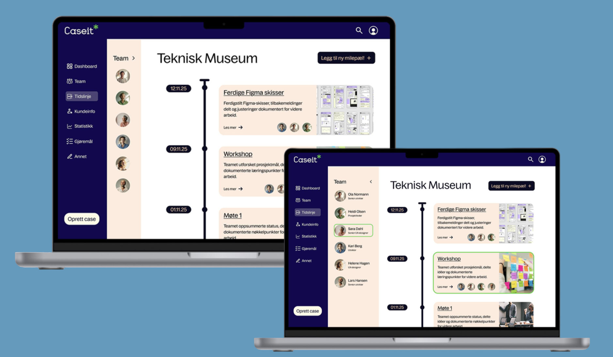
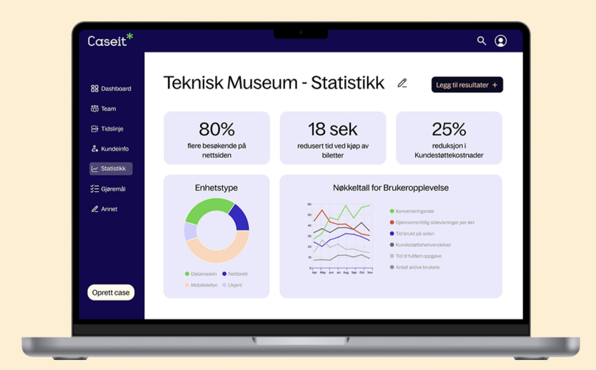

Gjennom intervjuer og observasjon i selskapet fant vi ut at dokumentasjon ofte blir
nedprioritert når det går fort i prosjektene. Informasjonen ligger spredt i meldingstråder og
ulike mapper, og ofte sitter én person igjen med ansvaret for å lage casen til slutt. Det gjør
det vanskelig å vise kundene hvilken verdi tverrfaglige team skaper, og å lære av tidligere
prosjekter.
Innsikten tok vi videre i en designsprint med brukerreiser, How Might We-spørsmål og Crazy
8s. Ideene ble deretter til storyboard, håndtegnede skisser og til slutt en high-fidelity-
prototype i Figma i selskapets visuelle profil.







Prosjektet ble laget i emnet MIX203 – Design for medieproduksjon ved Universitetet i Bergen
høsten 2025, sammen med tre andre studenter.
Verktøy: Figma